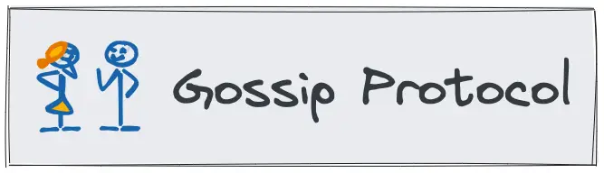
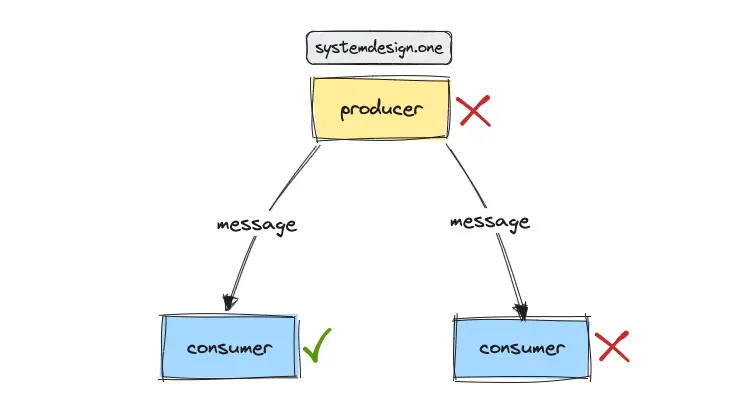
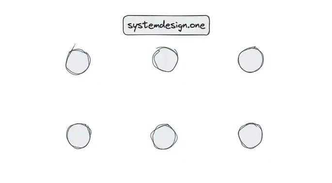

Gossip Protocol
Broadcast Algorithm Distributed Systems

The target audience for this article falls into the following roles:
- Tech workers
- Students
- Engineering managers
The prerequisite to reading this article is fundamental knowledge of system design components. This article does not cover an in-depth guide on individual system design components.
Disclaimer: The system design questions are subjective. This article is written based on my research on the topic and might differ from real-world implementations. Feel free to share your feedback and ask questions in the comments.
Download my system design playbook for free on newsletter signup:
What Is Gossip Protocol?
The typical problems in a distributed system are the following 1, 2:
- maintaining the system state (liveness of nodes)
- communication between nodes
The potential solutions to these problems are as follows 1:
- centralized state management service
- peer-to-peer state management service
Centralized State Management Service
A centralized state management service such as Apache Zookeeper can be configured as the service discovery to keep track of the state of every node in the system. Although this approach provides a strong consistency guarantee, the primary drawbacks are the state management service becomes a single point of failure and runs into scalability problems for a large distributed system 1, 2.
Peer-To-Peer State Management Service
The peer-to-peer state management approach is inclined towards high availability and eventual consistency. The gossip protocol algorithms can be used to implement peer-to-peer state management services with high scalability and improved resilience 1.
The gossip protocol is also known as the epidemic protocol because the transmission of the messages is similar to the way how epidemics spread. The concept of communication in gossip protocol is analogous to the spread of rumors among the office staff or the dissemination of information on a social media website 3, 4.
Terminology
The following terminology might be helpful for you:
- node: a server that provides functionality to other services
- fanout: number of nodes that receives a message from a particular node
- cycle: count of gossip rounds required to spread a particular message across the entire cluster of nodes
- API: a software intermediary that allows two applications or services to talk to each other
Requirements
Design a distributed system communication protocol with the following characteristics:
Functional Requirements
- support transmission of node metadata
- support transmission of application data
- simple to implement
Non-Functional Requirements
- highly available
- eventually consistent
- scalable
- reliable
- fault tolerant
- decentralized
Gossip Protocol Explained
The popular message broadcasting techniques in a distributed system are the following:
- point-to-point broadcast
- eager reliable broadcast
- gossip protocol
Point-To-Point Broadcast

The producer sends a message directly to the consumers in a point-to-point broadcast. The retry mechanism on the producer and deduplication mechanism on the consumers makes the point-to-point broadcast reliable. The messages will be lost when the producer and the consumer fail simultaneously 5.
Eager Reliable Broadcast
Every node re-broadcasts the messages to every other node via reliable network links. This approach provides improved fault tolerance because messages are not lost when both the producer and the consumer fail simultaneously. The message will be re-broadcast by the remaining nodes. The caveats of eager reliable broadcast are the following 5, 4:
- significant network bandwidth usage due to O(n²) messages being broadcast for n number of nodes
- sending node can become a bottleneck due to O(n) linear broadcast
- every node stores the list of all the nodes in the system causing increased storage costs
Gossip Protocol
The gossip protocol is a decentralized peer-to-peer communication technique to transmit messages in an enormous distributed system 1, 4. The key concept of gossip protocol is that every node periodically sends out a message to a subset of other random nodes 4, 6. The entire system will receive the particular message eventually with a high probability 2, 5. In layman’s terms, the gossip protocol is a technique for nodes to build a global map through limited local interactions 1.

The gossip protocol is built on a robust, scalable, and eventually consistent algorithm. The gossip protocol is typically used to maintain the node membership list, achieve consensus, and fault detection in a distributed system 6. In addition, additional information such as application-level data can be piggybacked on gossip messages 1.
The gossip protocol is reliable because a node failure can be overcome by the retransmission of a message by another node. First-in-first-out (FIFO) broadcast, causality broadcast, and total order broadcast can be implemented with gossip protocol 5.
The gossip protocol parameters such as cycle and fanout can be tuned to improve the probabilistic guarantees of the gossip protocol. The following tools offer a high-end simulation and visualization of the gossip protocol 4, 7:
The following characteristics of the gossip protocol make it an optimal choice as the communication protocol in a large-scale distributed system 8:
- limits the number of messages transmitted by each node
- limits the bandwidth consumption to prevent the degradation of application performance
- tolerates network and node failures
The gossip protocol can be used to keep nodes consistent only when the operations executed are commutative and serializability is not necessary. The tombstone is a special entry to invalidate the data entries that have a matching key without actual deletion of the data. The gossip protocol deletes the data from a node using a tombstone.
Further system design learning resources
Download my system design playbook for free on newsletter signup:
Types of Gossip Protocol
The time required by the gossip protocol to propagate a message across the system and the network traffic generated in propagating a message must be taken into consideration while choosing the type of gossip protocol for a particular use case 9. The gossip protocol can be broadly categorized into the following types 4, 9:
- anti-entropy model
- rumor-mongering model
- aggregation model
Anti-Entropy Gossip Protocol
The anti-entropy algorithm was introduced to reduce the entropy between replicas of a stateful service such as the database. The replicated data is compared and the difference between replicas are patched 9. The node with the newest message shares it with other nodes in every gossip round 4.
The anti-entropy model usually transfers the whole dataset resulting in unnecessary bandwidth usage. The techniques such as checksum, recent update list, and Merkle tree can be used to identify the differences between nodes to avoid transmission of the entire dataset and reduce network bandwidth usage. The anti-entropy gossip protocol will send an unbounded number of messages without termination 4.
Rumor-Mongering Gossip Protocol
The rumor-mongering protocol is also known as the dissemination protocol. The rumor-mongering cycle occurs relatively more frequently than anti-entropy cycles and floods the network with the worst-case load 9. The rumor-mongering model utilizes fewer resources such as network bandwidth as only the latest updates are transferred across nodes 4.
A message will be marked as removed after a few rounds of communication to limit the number of messages. There is usually a high probability that a message will reach all the nodes 4.
Aggregation Gossip Protocol
The aggregation gossip protocol computes a system-wide aggregate by sampling information across every node and combining the values to generate a system-wide value 9.
Strategies to Spread a Message through Gossip Protocol
The gossip protocol is an optimal framework to build a highly available service. The strategy to spread a message through gossip protocol should be chosen based on the service requirements and available network conditions. There are tradeoffs in terms of bandwidth, latency, and reliability with each strategy to spread a message. The strategies to spread a message apply to both anti-entropy and rumor-mongering models. The different strategies to spread a message with the gossip protocol are as follows 4, 7, 6:
- push model
- pull model
- push-pull model
Push Model
The push model is efficient when there are only a few update messages due to the traffic overhead. The node with the latest message sends the message to a random subset of other nodes in the push model 4.
Pull Model
Every node will actively poll a random subset of nodes for any update messages in the pull model. This approach is efficient when there are many update messages because it is highly likely to find a node with the latest update message 4.
Push-Pull Model
The push-pull model is optimal to disseminate update messages quickly and reliably 6. The node can push a new update message and the node can also poll for new update messages. The push approach is efficient during the initial phase when there are only a very few nodes with update messages. The pull approach is efficient during the final phase when there are numerous nodes with many update messages 4.
Gossip Protocol Performance
The number of nodes that will receive the message from a particular node is known as the fanout. The count of gossip rounds required to spread a message across the entire cluster is known as the cycle 4, 7.
For instance, it takes approximately 15 gossip rounds to propagate a message across 26,000 nodes. The gossip interval can be set to a value as low as 10 ms to propagate a message across a big data center in roughly 3 seconds. The propagation of a message in the gossip protocol should automatically age out to reduce the unnecessary load 3. The performance of a gossip protocol implementation can be measured with the following metrics 4:
- residue: number of remaining nodes that haven’t received the messages should be minimum
- traffic: average number of messages sent between nodes should be minimum
- convergence: every node should receive the message as quickly as possible
- time average: average time taken to send the message to every node should be low
- time last: the time taken for the last node to receive the message should be low
A case study showed that a system with 128 nodes consumed less than 2 percent of CPU and less than 60 KBps of bandwidth to run gossip protocol 2.
Download my system design playbook for free on newsletter signup:
Gossip Protocol Properties
There is no formal way to define gossip protocol. In general, the gossip protocol is expected to satisfy the following properties 4:
- node selection must be random to perform a fanout
- only local information is available to every node and the nodes are oblivious to the state of the cluster
- communication between nodes involves periodic, pairwise, interprocess interactions
- bounded size transmission capacity per gossip round
- every node deploys the same gossip protocol
- unreliable network paths between nodes are assumed
- node interaction frequency is low
- node interactions result in a state exchange
Gossip Algorithm
The high-level overview of the gossip algorithm is the following 10, 1:
- every node maintains a list of the subset of nodes and their metadata
- gossip to a random live peer node’s endpoint periodically
- every node inspects the received gossip message to merge the highest version number to the local dataset
The heartbeat counter of a node is incremented whenever a particular node participates in the gossip exchange. The node is labeled healthy when the heartbeat counter keeps incrementing. On the other hand, the node is considered to be unhealthy when the heartbeat counter has not changed for an extended period due to a network partition or node failure 1. The following are the different criteria for peer node selection in the gossip protocol 8:
- utilize library offered by programming languages such as java.util.random
- interact with the least contacted node
- enforce network-topology-aware interaction
Gossip Protocol Implementation
The gossip protocol transports messages over User Datagram Protocol (UDP) or Transmission Control Protocol (TCP) with a configurable but fixed fanout and interval 8. The peer sampling service is used by the gossip protocol to identify the peer nodes for gossip message exchange. The peer sampling service uses a randomized algorithm for the selection of a peer node. The Application Programming Interface (API) of the peer sampling service should provide the following endpoints 4:
- /gossip/init: returns the list of nodes known to a particular node at startup
- /gossip/get-peer: returns the address (IP address and port number) of an independent peer node
The workflow of the peer sampling service execution is as follows 4:
- initialize every node with a partial view of the system (a list with the subset of nodes)
- merge the node’s view with the peer node’s view on the gossip exchange
Put another way, every node maintains a small local membership table with a partial view of the system and periodically refreshes the table through gossip messages. The gossip protocol can leverage probabilistic distribution for selecting a peer node to reduce duplicate message transmission to the same node 3.
The application state can be transferred as key-value pairs via the gossip protocol. The most recent value must be transferred when multiple changes are performed to the same key by a node. The API provided by the gossip protocol to orchestrate application state exchange is the following 10:
- /gossip/on-join
- /gossip/on-alive
- /gossip/on-dead
- /gossip/on-change
The seed nodes are fully functional nodes that are based on static configuration. Every node in the system must be aware of the seed nodes. The gossip system interacts with the seed nodes to prevent logical divisions 3, 8. The following is the high-level workflow when a node receives a gossip message with the node metadata of a peer node 8:
- compares the incoming gossip message to identify the missing values on the local node’s dataset
- compare the incoming gossip message to identify the missing values on the peer node’s dataset
- higher version value is chosen when the node already contains the values present in the incoming gossip message
- append the missing values in the local node’s dataset
- return the missing values on the peer node’s dataset in the response
- update the peer node’s dataset with the received response
It is typical to transfer the entire node metadata through the gossip protocol on a node startup. An in-memory version number can be maintained by each node to send only incremental updates of the node metadata through the gossip protocol.
The generation clock is a monotonically increasing number indicating the generation of the server. The generation clock is incremented whenever the node restarts. The version number guarantees the ordering and versioning of the application state. The version number can only be incremented 10. The generation clock can be used along with the version number to detect node metadata changes correctly on node restarts 8.
The gossiper timer is a component of the gossip protocol that will ensure every node eventually contains the crucial metadata about peer nodes, including the nodes that are behind a network partition. Every node includes a heartbeat associated with it. The heartbeat state consists of the generation and version number. The application state consists of key-value pairs representing the node state and a version number 10.
A node initiating a gossip exchange sends a gossip digest synchronization message that consists of a list of gossip digests. The gossip digest consists of an endpoint address, a generation number, and a version number. The gossip digest acknowledgment message consists of a gossip digest list and an endpoint state list. The sample schema for the gossip digest is the following 10:
|
|
Further system design learning resources
Download my system design playbook for free on newsletter signup:
Gossip Protocol Use Cases
The gossip protocol is used in a multitude of applications where eventual consistency is favored. The popular applications of the gossip protocol are as follows 4, 7, 3, 11, 8:
- database replication
- information dissemination
- maintaining cluster membership
- failure detection
- generate aggregations (calculate average, maximum, sum)
- generate overlay networks
- leader election
The gossip protocol can be used to detect the failure of a node in a distributed system with high probability. The failure detection of nodes can save resources such as CPU, bandwidth, and queue space. In a distributed system, it is not sufficient to assert a node failure when a single client cannot interact with the particular node because there might be an occurrence of network partition or client failure 1. It can be concluded with certainty the failure of a particular node when several nodes (clients) confirm the liveness of the particular node through gossip protocol 3, 2.
The gossip protocol is significantly more reliable for data exchange and command and control than through TCP connections. The gossip protocol enables abstracting communication about node and subsystem properties out of the application logic 2. The node statistics such as the average load and free memory can be transmitted in gossip messages to improve the local decision-making on fanout.
The subsystem information such as queue depth, key metadata such as configuration changes, and even request-response can be transmitted through the gossip protocol. The aggregation of node update messages via gossip protocol allows sending data in a single chunk instead of multiple small messages to reduce the communication overhead 2.
The messages can be routed across the cluster optimally by identifying the liveness of nodes 12. The decision-making at the local node level without involving a centralized service is the key to scaling the gossip protocol 3, 2. The messages can be versioned with a vector clock to ignore the older message versions by the node 12, 6. The real-world use cases of the gossip protocol are the following 8, 4, 3, 12, 2:
- Apache Cassandra employs the gossip protocol to maintain cluster membership, transfer node metadata (token assignment), repair unread data using Merkle trees, and node failure detection
- Consul utilizes the swim-gossip protocol variant for group membership, leader election, and failure detection of consul agents
- CockroachDB operates the gossip protocol to propagate the node metadata
- Hyperledger Fabric blockchain uses the gossip protocol for group membership and ledger metadata transfer
- Riak utilizes the gossip protocol to transmit consistent hash ring state and node metadata around the cluster
- Amazon S3 uses the gossip protocol to spread server state across the system
- Amazon Dynamo employs the gossip protocol for failure detection, and keeping track of node membership
- Redis cluster uses the gossip protocol to propagate the node metadata
- Bitcoin uses the gossip protocol to spread the nonce value across the mining nodes
Gossip Protocol Advantages
The advantages of gossip protocol are the following 4, 6, 11, 3, 7:
- scalable
- fault tolerant
- robust
- convergent consistency
- decentralized
- simplicity
- integration and interoperability
- bounded load
Scalability
Scalability is the ability of the system to handle the increasing load without degradation of the performance 6. The gossip protocol cycle requires logarithmic time to achieve convergence. In addition, every node interacts with only a fixed number of nodes and sends only a fixed number of messages independent of the number of nodes in the system. A node doesn’t wait for an acknowledgment to improve latency 4, 3, 7.
Fault Tolerance
Fault tolerance is the ability of the system to remain functional in the occurrence of failures such as node crashes, network partitions, or message loss. The distributed system employing the gossip protocol is fault tolerant due to tolerance towards unreliable networks. The redundancy, parallelism, and randomness offered by the gossip protocol improve the fault tolerance of the system 6.
Furthermore, the symmetric and decentralized nature of the nodes strengthens the fault tolerance of the gossip protocol 7. The same message is usually transmitted several times across multiple nodes. Put another way, there are many routes for the message flow between the source and destination. So, a node failure is overcome via message transmission through another node 4, 3.
Robustness
The symmetric nature of the nodes participating in the gossip protocol improves the robustness of the system 7, 3. A node failure will not disrupt the system quality. The gossip protocol is also robust against transient network partitions. However, the gossip protocol is not robust against a malfunctioning node or a malicious gossip message unless the data is self-verified 4, 11.
A score-based reputation system for nodes can be used to prevent gossip system corruption by malicious nodes. Appropriate mechanisms and policies such as encryption, authentication, and authorization must be implemented to enforce the privacy and security of the gossip system 6.
Convergent Consistency
Consistency is the technique of ensuring the same state view across every node in the system. The different consistency levels such as strong, eventual, causal, and probabilistic consistency have different implications on the performance, availability, and correctness of the system 6. The gossip protocol converges to a consistent state in logarithmic time complexity through the exponential spread of data 4, 7.
Decentralization
The gossip protocol offers an extremely decentralized model of information discovery through peer-to-peer communication 4, 3, 7.
Simplicity
Most variants of the gossip protocol can be implemented with very little code and low complexity 4, 7. The symmetric nature of the nodes makes it trivial to execute the gossip protocol 11.
Integration and Interoperability
The gossip protocol can be integrated and interoperated with distributed system components such as the database, cache, and queue. Common interfaces, data formats, and protocols must be defined to implement the gossip protocol across different distributed system components 6.
Bounded Load
The classic distributed system protocols usually generate high surge loads that might overload individual distributed system components. The gossip protocol will produce only a strictly bounded worst-case load on individual distributed system components to avoid the disruption of service quality. The peer node selection in the gossip protocol can be tuned to reduce the load on network links. In practice, the load generated by the gossip protocol is not only bounded but also negligible compared to the available bandwidth 11.
Gossip Protocol Disadvantages
The disadvantages of the gossip protocol are the following 1, 7, 4, 6, 11:
- eventual consistency
- unawareness of network partitions
- relatively high bandwidth consumption
- increased latency
- difficulty in debugging and testing
- membership protocol is not scalable
- prone to computational errors
Eventually Consistent
The gossip protocol is inherently eventually consistent 1. The gossip protocol is relatively slower compared to multicast 7. There is also an overhead associated with gossip messages and the gossip behavior depends on the network topology and node heterogeneity 6. Therefore, there will be some delay to recognize a new node or a node failure by the cluster 8.
Network Partition Unawareness
When a network partition occurs, the nodes in the sub-partition will still gossip with each other. Hence, the gossip protocol is unaware of network partitions and might significantly delay message propagation 1, 11.
Bandwidth
The gossip protocol is not known for efficiency as the same message might be retransmitted to the same node multiple times consuming unnecessary bandwidth 7, 4. Although the bandwidth usage by the gossip protocol is limited due to bounded message size and periodic exchange of messages, the effective fanout by gossip exchange might degrade when the amount of information that a node should gossip exceeds the bounded message size 11.
The saturation point of the gossip protocol depends on different parameters such as the rate of generation of messages, message size, fanout, and the type of gossip protocol 11, 4.
Latency
The usage of the gossip protocol results in increased latency because the node must wait for the next gossip cycle (interval) to transmit the message 7. The message doesn’t trigger the gossip exchange but the gossip protocol interval timer does. The time complexity required to spread the message across the system is logarithmic 4, 3.
Debugging and Testing
Debugging is identifying and fixing the failures that cause the gossip protocol to deviate from the expected behavior. Testing is the ability to verify whether the gossip protocol meets functional and non-functional requirements such as performance, reliability, and security 6.
The inherent non-determinism and distributed nature of the gossip protocol make it hard to debug and reproduce the failures 4, 7, 6. Tools and techniques such as simulation, emulation, logging, tracing, monitoring, and visualization can be used to test and debug the gossip system 6.
Scalability
Most variants of the gossip protocol rely on a non-scalable membership protocol 7.
Computational Error
The gossip protocol is inclined to computational errors due to malicious nodes. The nodes should implement a self-correcting mechanism because the robustness of the gossip protocol is limited to certain classes of failures 11. Nevertheless, the gossip protocol is extremely reliable, and outcomes with a probability of one are typical 4.
Summary
Gossiping in a distributed system is a boon while gossiping in the meat world is a curse. The gossip protocol is employed in distributed systems such as Amazon Dynamo and Distributed Counter.
What to learn next?
Download my system design playbook for free on newsletter signup:
License
CC BY-NC-ND 4.0: This license allows reusers to copy and distribute the content in this article in any medium or format in unadapted form only, for noncommercial purposes, and only so long as attribution is given to the creator. The original article must be backlinked.
References
-
Prateek Gupta, Gossip Protocol in distributed systems (2022), medium.com ↩︎
-
Todd Hoff, Using Gossip Protocols For Failure Detection, Monitoring, Messaging And Other Good Things (2011), highscalability.com ↩︎
-
Bhumika Dutta, A Gentle Introduction to Gossip Protocol (2022), analyticssteps.com ↩︎
-
Felix Lopez, Introduction to Gossip (2016), managementfromscratch.wordpress.com ↩︎
-
Martin Kleppmann, Distributed Systems 4.3: Broadcast algorithms (2021), YouTube.com ↩︎
-
How do you integrate a gossip system with other distributed components and services?, Distributed Systems (LinkedIn.com) ↩︎
-
Gabriel Acuna et al., Parallel & Distributed Computing - Gossip Protocol (2020), YouTube.com ↩︎
-
Unmesh Joshi, Gossip Dissemination (2021), martinfowler.com ↩︎
-
Alan Demers et al., Epidemic Algorithms for Replicated Database Maintainance (1987), berkeley.edu ↩︎
-
Architecture Gossip, Cassandra ↩︎
-
Ken Birman, The Promise, and Limitations, of Gossip Protocols (2007), cornell.edu ↩︎
-
Kumar Chandrakant, Fundamentals of Distributed Systems (2023), baeldung.com ↩︎